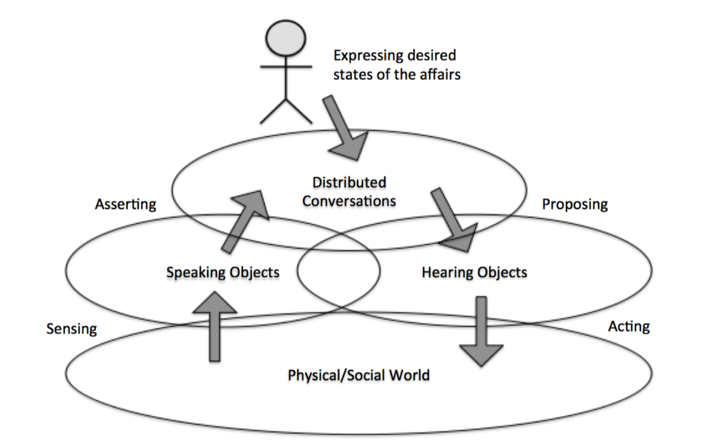
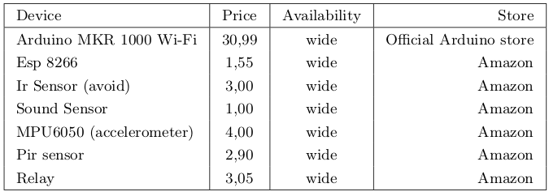
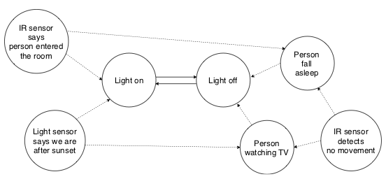

Argumentation-based Coordination in IoT:
a Speaking Objects Proof-of-Concept
DISMI, Università di Modena e Reggio Emilia
IDCS 2019 - Napoli, Italy - 10/10/2019
Outline
- Why argumentation-based coordination in IoT?
- The Speaking Objects vision
- Real world prototype
- PoC deployment
- Feasibility
IoT systems today
Common design considers devices as simple providers of services:
- sensing services => raw data
- actuating services => commands
Likewise, most designs adopt a centralised, cloud-based perspective:
- raw sensor data collected at a control point
- there analysed to inform decision making algorithms
- finally actuator commands generated and sent
IoT systems tomorrow
Devices becoming smarter by embedding AI algorithms:
- sensors: raw data => situations => state of affairs
- actuators: commands => rules => goals
Deployments moving to Fog/Edge, massive scale:
- distributed sensing and control
- decentralised coordination
- local actions => global effects
Paradigm shift
Coordination => argumenting about current and future “state of the affairs”:
- sensors => "speaking" objects
- actuators => "hearing" objects
- protocols => argumentation frameworks
Speaking Objects: core idea
Speaking Objects: coordination
Interaction is the focal point (vs. Smart Objects)
- Speaking-to-Speaking => shared understanding
- Speaking-to-Hearing => planning
- Hearing-to-Hearing => joint deliberation
Dialogue types to frame conversational coordination
Speaking Objects: example
From theory to practice
- Target scenarios:
- detect home invasion, act accordingly
- detect energy saving opportunities, act accordingly
- Requirements:
- affordable devices, easy acquisition => scalability, time to market
- distributed deployment => scalability, faithful to Speaking Objects vision
- p2p interaction => scalability, faithful to Speaking Objects vision
- basic argumentation => coordination, faithful to Speaking Objects vision
Issues: context vs. commonsense
Contextual knowledge is:
- highly dynamic
- situated in time and space
- tied to specific goals and functions
- e.g. data streams from sensors
Commonsense knowledge is:
- quasi-static
- non situated
- general purpose
- e.g. relative concepts such as short vs. tall, hot vs cold
- e.g. basic cause => effect laws such as light on => illumination higher
Where to put it? Context at the Edge vs. commonsense in the Cloud?
Issues: abstraction gap
Goal-orientation vs. commands:
- commands => no processing => cheap Edge devices
- reactive rules => little processing => Edge/Fog devices?
- planning => medium processing => Edge/Fog devices + AI?
- goals => heavy processing => Cloud only?
Agents at the Edge?
Situations vs. perceptions:
- raw data => no processing => cheap Edge devices
- aggregate information => little processing => Edge/Fog devices?
- information fusion => medium processing => Edge/Fog devices + AI?
- situation recognition => heavy processing => Cloud only?
Machine learning at the Edge?
PoC: architecture

PoC: feasibility

ESP modules key enablers of p2p
- wi-fi connection to local network for any device
- basic data processing and rule-based reasoning
Home invasion
- Night-time, window closed
- Indoor noise > threshold => ask accelerometer
- Force > threshold => ask humidity
- Humidity + Outdoor noise > threshold => thunderstorm
Argument no_intrusion has stronger support than intrusion
Energy saving

Rules are commonsense, perceptions are context
logic facts + ConceptNet knowledge base
Lessons learnt
- Key technologies ready for Speaking Objects
- Unclear where / how to deploy commonsense knowledge
- Weak agency feasible at the Edge / Fog
- Need AI benchmarks assessing where the line between Edge and Cloud is
Thanks
for your attention
Questions?
Università di Modena e Reggio Emilia